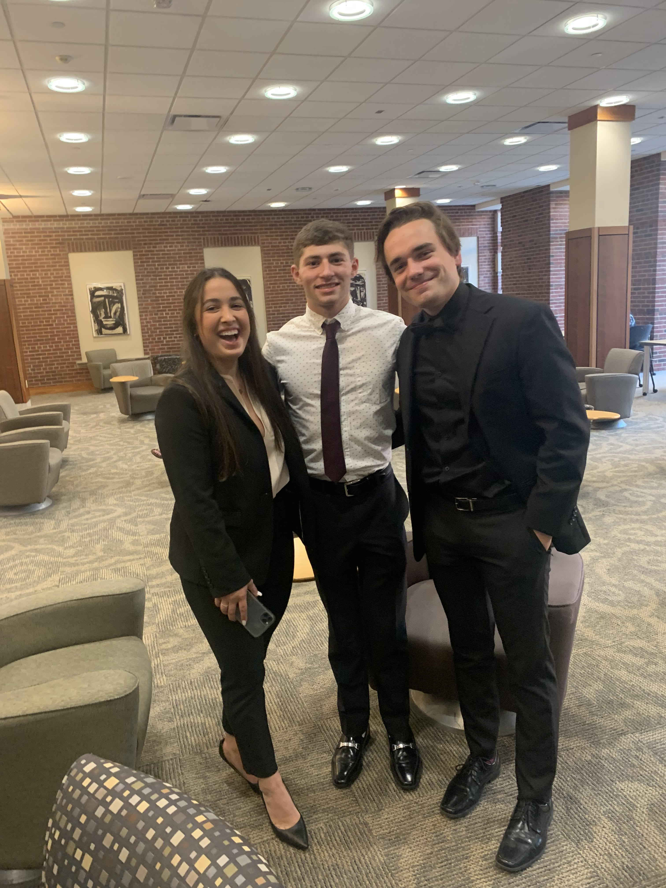

About Me
The improvement of the foundations of our communities helped me choose business as my field of study.
I set high standards for myself in school, evidenced by my six placements on the University of Iowa President’s List, and I work tirelessly to reach my goals.
Outside of the classroom, through joining different campus organizations I have met individuals that share a mutual passion for networking and exceeding expectations.
Last summer, I served as an Assurance Intern at EY where I was able to prove my skills in professional skepticism and attention to detail when dealing with complex accounting issues.
- Identified potential audit issues or unusual relationships in financial statements with a detailed analytical trend analysis
- Operated effectively in a regulated environment while auditing Fortune 500 clients and protecting capital markets
University of Iowa Student-Athlete Academic Services, Student Tutor, Iowa City, IA
- Directed group tutoring sessions with student-athletes to study course concepts and create academic plans for success
Frontier Co-Op, Accounting Intern, Norway, IA
- Demonstrated adaptability by working remotely using a VPN and collaborating with coworkers over Microsoft Teams
- Classified enterprise resource program development costs as expense or capitalization for an upcoming audit
- Reconciled the monthly balance sheet and sales tax for transactions in the United States and Canada by utilizing Excel skills
Westmark Enterprises, Inc., Accounting and Telecommunications Intern, Dubuque, IA
- Reviewed tax exemption certificates from 9 states to ensure the forms were properly filled out and entered into CERTifyTax
- Researched outside sales expense reports and conducted a project to study the meal per diem rate
- Processed the monthly phone and internet bills into Excel and SharePoint for Westmark and its family companies
L. May Eatery, Bartender and Busboy, Dubuque, IA
- Cleared empty tables and maintained efficiency with a team of 10+ waitstaff in a fast-paced environment
- Received a promotion after a year to become a barback which increased duties to keeping a detailed bar inventory
- Utilized customer service knowledge by ensuring a positive experience for 100+ customers per night
Hobbies & Interests
Boating on the Mississippi River, Skiing, Watching sports, Working out & running, Stocks & technology, Music, Spending time with family & friends
Professional Images
